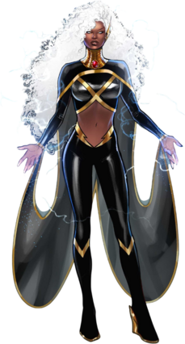

Black and
African American
Black and African American identities have historically held significant presences in media.
Unfortunately, the large majority of these identities' representation has been negative,
with stereotypes such as the Sambo, Jezebel, and Mammy persisting for centuries.
Massive strides have been made to improve the representation of these identities,
but there’s much more to be done.
The Good, the Bad, and the Ugly



Contact Us
support@youshouldcare.com